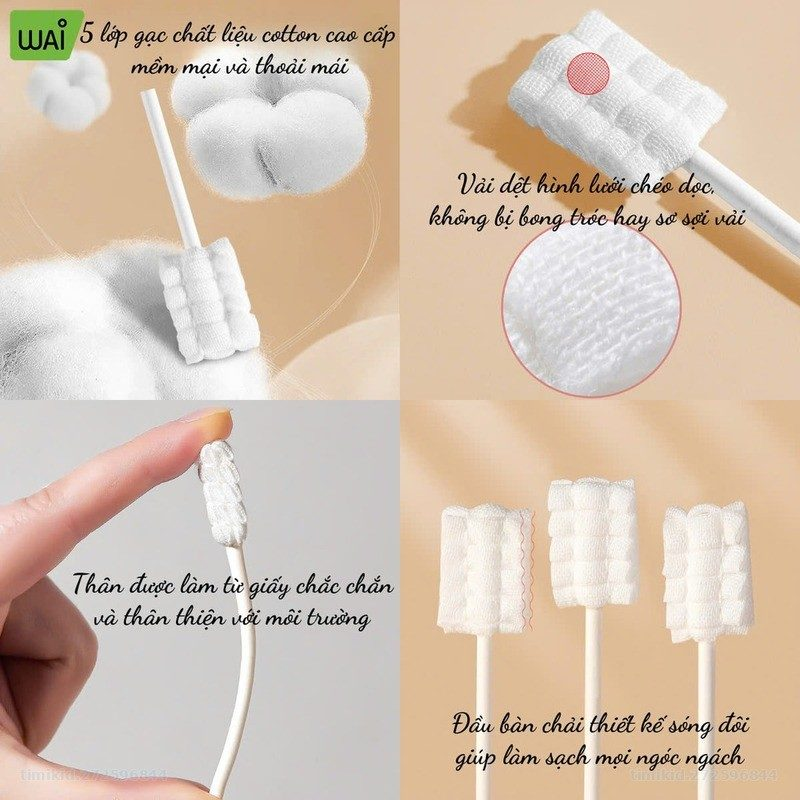
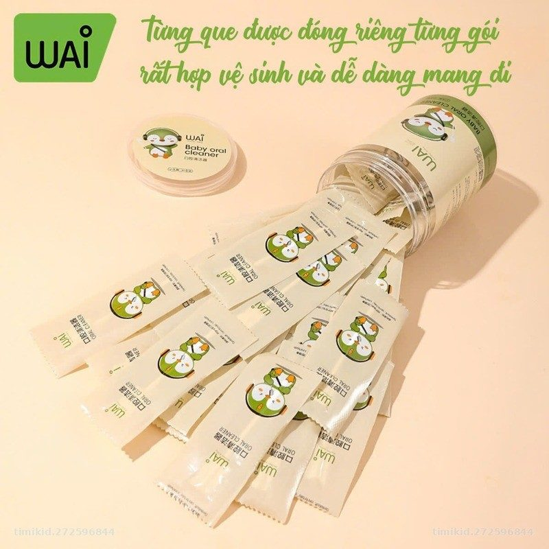

Que rơ lưỡi Wai
Bông kháng khuẩn · Hộp 30 que · Bé 0–24 tháng
Vệ sinh khoang miệng, lưỡi và nướu cho bé hằng ngày, phòng tưa lưỡi.
- 30 que/hộp, từng que đóng túi riêng vô trùng
- Bông vô trùng, khử khuẩn UV, tay cầm bằng giấy
- 2 phân loại: Xanh 0–6 tháng, Vàng 6–24 tháng
- Nhỏ gọn, tiện mang theo khi ra ngoài